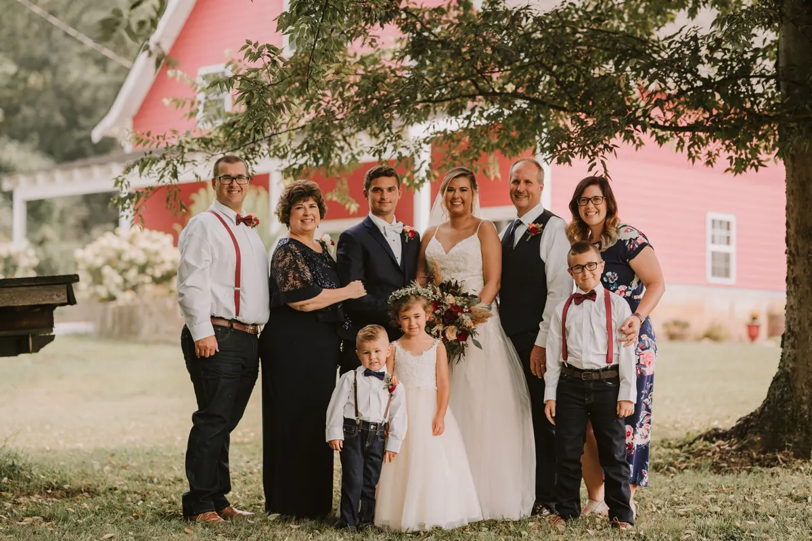
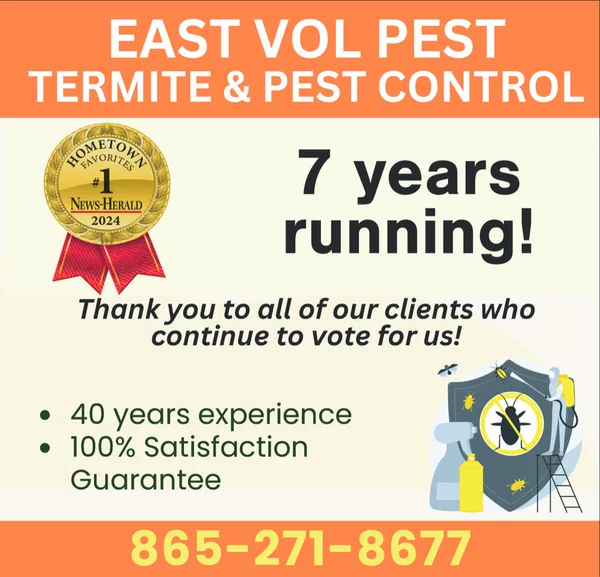

Brad and Karen Gardner
East Vol Pest is a family business. Brad brings a lifetime of pest control. Karen runs the office. Locally owned and operated in Loudon.

Brad
Brad grew up in a large family-owned pest control business in Cleveland, Tennessee, Volunteer Rid A Pest. He brings a lifetime in the trade to Loudon and Lenoir City, plus hundreds of hours of state training for termite and pest control from the Tennessee and Georgia Departments of Agriculture. He has a business degree from Dalton College.
His approach is simple: find the source of the problem and treat it directly, with the most effective, longest lasting, safest products, and never over-apply in your home.
Karen
Karen handles the office side: sales calls, scheduling, billing and everything else that comes up in a day. Before pest control she was a safety manager at a large chemical manufacturer, where she researched chemicals and wrote their safety data sheets. She set up East Vol Pest’s safety programs.
Their site puts it plainly: “Karen wants our customers to feel like family and goes that extra mile to make that happen.”
Brad and Karen have been married since 1986. They have two children and three grandchildren, and Karen (“GG” to the grandkids) belongs to several local history groups, including the Daughters of the American Revolution.
Grown by word of mouth
“We do very little advertising and our growth continues to amaze us. Our main source of growth is satisfied customers referring family and friends to us. This is the biggest compliment that we could receive.”
“I have used East Volunteer Termite & Pest Control several times. I have found them to be honest and reliable. They explained what they would do and were very professional. I have recommended them to many of my family members.”
“Always very friendly and work with our schedules well.”
“Can’t recommend this place enough!! Great service and great prices!”
“Highly recommend!! Great friendly people!!”

Now hiring: pest control technician
East Vol Pest is looking for someone with a neat appearance, good customer service skills, a willingness to learn and good attendance.
- Pay: $40,000 to $55,000
- Experience: not required. They’ll train the right person.
- Provided: truck, training and equipment
- Must live in: Lenoir City or Loudon
A photo of one of the East Vol Pest trucks. For someone thinking about applying, “truck provided” means more when they can see it.